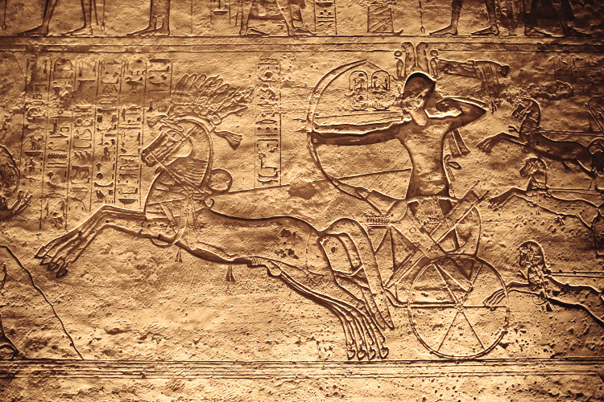
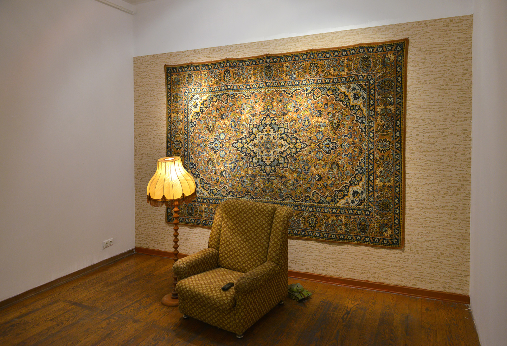

Aanrakingen van kunst tijdens oorlog — Kunstlogboek (Thema: Oorlog)
Gevonden notitie in de zak van een oude jas
“Ik schrijf dit om mens te blijven.”
In deze verschrikkelijke tijd was er voor mij één redder, kunst. Dit dagboek verzamelt tien werken die een soldaat op een diepere manier liet nadenken in een tijd van een objectief conflict zonder winnaar. Elke pagina toont zijn bedenkingen over kunst, dit was het enige wat hem normaal hield in deze tijd.
Persoonlijk fragment
Een Spaanse soldaat gaf me de foto en mijn handen trilden toen ik de pijn van de mensen in de kunst zag. Die pijn had ik met mijn eigen ogen moeten aanzien hier…
notitie gevonden in de zak van een oude jas

Titel: De Slag bij Kadesh — Kunstenaar: Anonieme Egyptische hofkunstenaars — Jaar: ca. 1274 v.Chr. — Stroming: Oudheid — Discipline: Reliëf / Beeldhouwkunst
Waarom past dit in het thema ‘Oorlog’?
Dit grote oude reliëf dat militaire macht en duel toont laat zien dat oorlog tijdloos is. Het toont heel letterlijk hoe een soldaat ten strijde gaat en hoe andere manschappen achter zich volgen. Iets waar ik aan kan relateren door de gruwen dat ik al heb gezien en weet hoe manschappen blindeloos in gevecht stormen, zonder te beseffen dat ze hier zelf niets uithalen.
tijdloosheldhaftigkracht
Titel: Guernica — Kunstenaar: Pablo Picasso — Jaar: 1937 — Stroming: Klassieke periode / Modernisme — Discipline: Schilderkunst
Waarom past dit in het thema ‘Oorlog’?
Guernica is een van de meest iconische kunstwerken als het gaat over oorlog en de pijn en vernieling die oorlog achterlaat. Het toont een stad midden in de burgeroorlog, je ziet de pijn op de gezichten en de emoties worden heel hard uitgedrukt door de scherpe figuren. Het schilderij wordt overgenomen door het verdriet van de personages die erop afgebeeld staan. Als ik naar dit kunstwerk kijk krijg ik rillingen door de gezichten van de mensen erop.
gruwelpijninzicht
Titel: De executie van keizer Maximiliaan — Kunstenaar: Édouard Manet — Jaar: 1867–1869 — Stroming: Impressionisme — Discipline: Schilderkunst
Waarom past dit in het thema ‘Oorlog’?
De kunstenaar toont hoe rangen in oorlog meer betekenen dan de mensen zelf, hoe hoger je staat hoe beter je bent. Er is een executie die toont hoe macht en geweld gebruikt wordt in tijden van oorlog. Het toont dat oorlog niet altijd twee fronten zijn die tegen elkaar vechten, maar dat vaak de belangrijkste daden stil en strategisch uitgevoerd worden. Iets dat ik zeker al had meegemaakt in mijn tijd van oorlog.
koudopofferingmacht
Titel: La Partie de Cartes — Kunstenaar: Fernand Léger — Jaar: 1917 — Stroming: Kubisme — Discipline: Schilderkunst
Waarom past dit in het thema ‘Oorlog’?
De kunstenaar toont ons oorlogsvoering op een andere manier. Met geometrische onderdelen toont hij de ‘troepen’ als deel van een machine. Misschien toont hij ook een oorlog in zijn hoofd door op zo’n abstracte manier kunst te maken. Oorlog zorgt soms dat we allemaal een eigen oorlog in ons hoofd hebben.
mechanischnadenkendiep
Titel: Het Gezicht van de Oorlog — Kunstenaar: Salvador Dalí — Jaar: 1940 — Stroming: Surrealisme — Discipline: Schilderkunst
Waarom past dit in het thema ‘Oorlog’?
Dit beeld toont angst, dood, het slechte — hoe je het ook wil interpreteren. Allemaal dingen direct gelinkt aan oorlog. Het toont dood op een artistieke manier, een mysterie zoals Dalí zijn werken. Het leek alsof ik keek in de ogen van de dood zelf toen ik hiernaar keek, hopelijk zal ik hem niet snel ontmoeten.
doodnachtmerrieherhaling
Titel: Elegy to the Spanish Republic No. 110 — Kunstenaar: Robert Motherwell — Jaar: 1971 — Stroming: Abstract Expressionisme — Discipline: Schilderkunst
Waarom past dit in het thema ‘Oorlog’?
De zwarte vormen zijn rouwtekens, een manier om verlies te tonen. Iets wat in oorlog telkens weer gebeurt. Het heeft donkere, sobere kleuren die overeenkomen met het algemene gevoel van oorlog. Zelf heb ik al veel moeten rouwen doorheen deze periode. Kan dit maar allemaal gewoon over zijn.
Met deze strip-achtige afbeelding tonen ze een gevechtsvliegtuig dat een ander neerhaalt. Het toont hoe oorlog niet alleen op de grond gevochten wordt, en hoe de manier van oorlog evolueert. Als ik het geluid van een bommenwerper hoor in de verte, vrezen we allemaal het ergste.
overdrevencartoontekst
Titel: Dead Troops Talk — Kunstenaar: Jeff Wall — Jaar: 1992 — Stroming: Hyperrealisme — Discipline: Geënsceneerde fotografie
Waarom past dit in het thema ‘Oorlog’?
Het toont de oorlog zo eerlijk mogelijk: het afzien van de soldaten die tussen de doden liggen. De verschrikkelijke dingen waar een soldaat doorheen moet in tijden van oorlog. Zelf heb ik al in de loopgraven gelegen met doden naast mij, de beelden geven me nachtmerries.
Het toont een gebroken omgekeerde obelisk die balanceert op een piramide. Dit symboliseert hoge verwachtingen die nooit vervuld worden. Zoals in oorlog, waar soldaten dachten dat alles anders zou zijn voor ze ten strijde gingen — of hoe politici een verhaal verkopen dat nooit volledig klopt. Zelf had ik nooit gedacht dat dit de werkelijkheid van oorlog zou zijn, zoveel spijt dat ik meedraag.
monumentkapotomgekeerd

Titel: Unheimlich — Kunstenaar: Pavel Otdelnov — Jaar: 2015 — Stroming: Hedendaagse kunst — Discipline: Installatie / mixed media
Waarom past dit in het thema ‘Oorlog’?
Deze hedendaagse kunst lijkt eerst niets met oorlog te maken te hebben. Maar als je goed kijkt zie je dat er onderdelen verstopt zijn. Het toont dat je niet altijd ziet aankomen wanneer er oorlog of conflict komt. Niemand in ons land zag deze oorlog aankomen, het leek allemaal zo dom en klein.